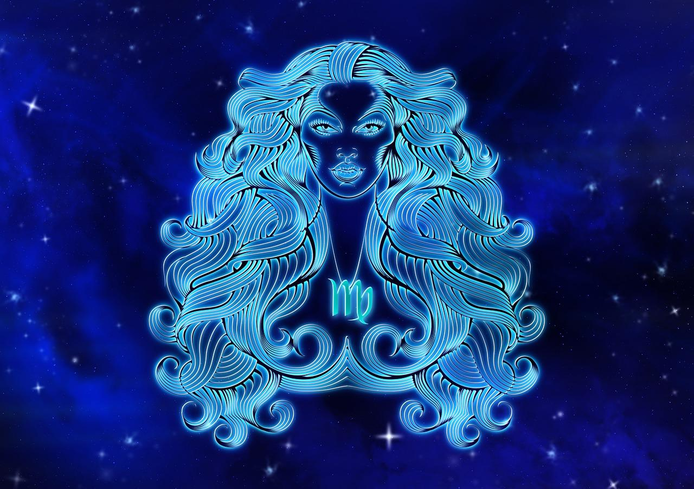

ДІВА
(23 серпня - 23 вересня)


Діви створені для того, щоб вчитися і постійно розвивати свою особистість.
Знак зодіаку Діва є одним з найбільш загадкових і багатогранних. Люди, що народилися під цим знаком, володіють рядом якостей, які роблять їх незабутніми і цікавими особистостями. Вони комбінують в собі аналітичний розум, тонку інтуїцію та велику робочу здатність. Але що саме робить Діву такою особливою? Давайте разом відкривати таємниці цього знака зодіаку, його особливості характеру, специфіку взаємодії з іншими знаками та багато іншого. Вважається, що Діви – охайні, скрупульозні, стримані, методичні, раціональні. Вони не сприймають безладу і лінощів.
- Особливості: вимогливість,систематичність,аналітичні здібності.
- Символізм: символізує чистоту і природність Діви, вказує її вміння розрізняти добро і зло.
- Вплив: люди цього знака завжди дбають про деталі та прагнуть до досконалості у всьому.
- Камені-талісмани: змійовик, хризопраз і перидот, зелений агат, нефрит.
Діви створені для того, щоб вчитися і постійно розвивати свою особистість.